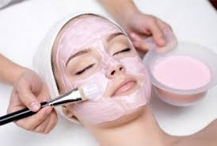
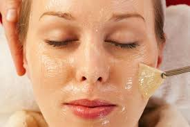
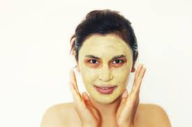
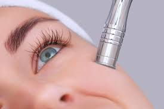
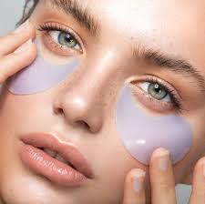
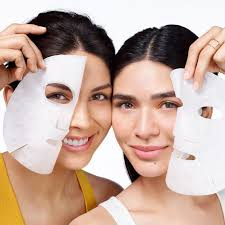

Nuestros Tratamientos
Hidratación Profunda
Ideal para pieles secas o deshidratadas, este tratamiento penetra en las capas más profundas de la piel para restaurar su humedad natural. Ayuda a recuperar la suavidad, la elasticidad y el brillo de una piel bien hidratada, combatiendo la descamación y la tirantez.
Productos recomendados: Sérums a base de ácido hialurónico, cremas hidratantes con ceramidas y lociones con aloe vera.
Peeling Químico Revitalizante
El peeling químico exfolia profundamente la piel, eliminando células muertas y estimulando la renovación celular. Mejora la textura de la piel, disminuye manchas y suaviza líneas finas, logrando un cutis más luminoso y uniforme.
Productos recomendados: Soluciones con ácido glicólico, ácido láctico o ácido salicílico, junto con un buen protector solar para cuidar la piel post-tratamiento.
Mascarilla de Arcilla Purificante
Ideal para pieles grasas o con tendencia al acné, las mascarillas de arcilla absorben el exceso de grasa, limpian los poros y reducen la inflamación. Este tratamiento deja la piel limpia, mate y sin impurezas.
Productos recomendados: Mascarillas de arcilla verde o bentonita, tónico de hamamelis y gel hidratante sin aceite.
Tratamiento Anti-Edad con Colágeno

Para combatir los signos de envejecimiento, este tratamiento aporta firmeza y elasticidad a la piel. Estimula la producción de colágeno, mejorando la apariencia de las líneas de expresión y arrugas.
Productos recomendados: Cremas con colágeno y elastina, sérums con retinol y antioxidantes como la vitamina C.
Microdermoabrasión
La microdermoabrasión es ideal para exfoliar de manera controlada, logrando una piel más suave y uniforme. Reduce cicatrices, manchas y mejora la textura general de la piel, dejándola lista para absorber mejor los tratamientos.
Productos recomendados: Geles de microexfoliación, cremas calmantes con manzanilla y protector solar de amplio espectro.
Tratamiento Descongestivo para Ojeras
Diseñado para disminuir bolsas y ojeras, este tratamiento mejora la circulación alrededor de los ojos, reduciendo la hinchazón y oscurecimiento. Ideal para quienes buscan un aspecto descansado y fresco.
Productos recomendados: Geles con cafeína y péptidos, rodillos de jade o cuarzo y cremas específicas para el contorno de ojos.
Tratamiento Anti-Manchas con Vitamina C
Este tratamiento aclara las manchas y unifica el tono de la piel, aportando luminosidad y un aspecto radiante. La vitamina C es clave para combatir las manchas solares y las marcas de acné, dándole al rostro una apariencia más clara.
Productos recomendados: Sérums y cremas con vitamina C estabilizada, protector solar diario y exfoliantes suaves.